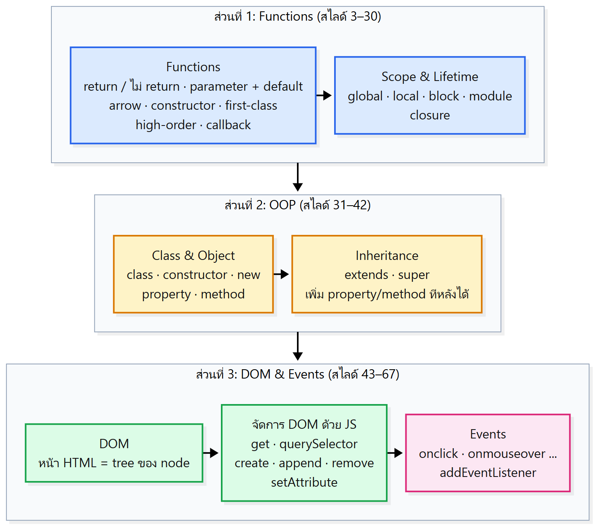
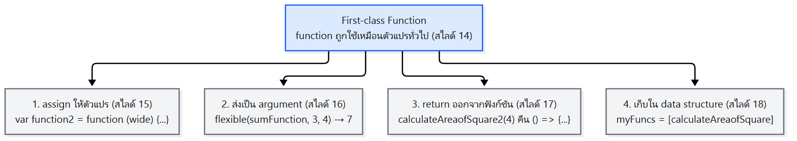
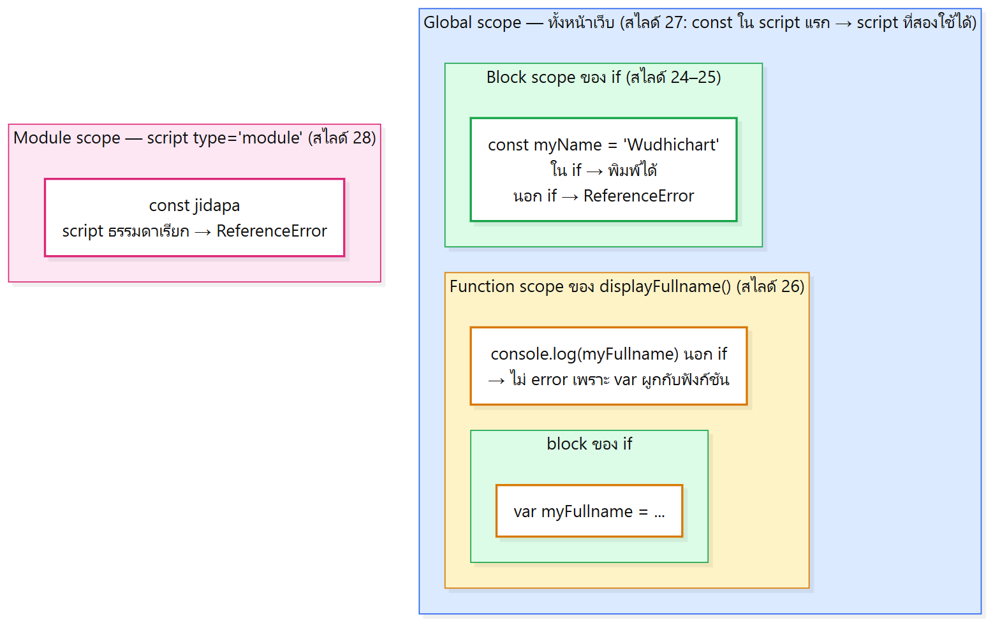
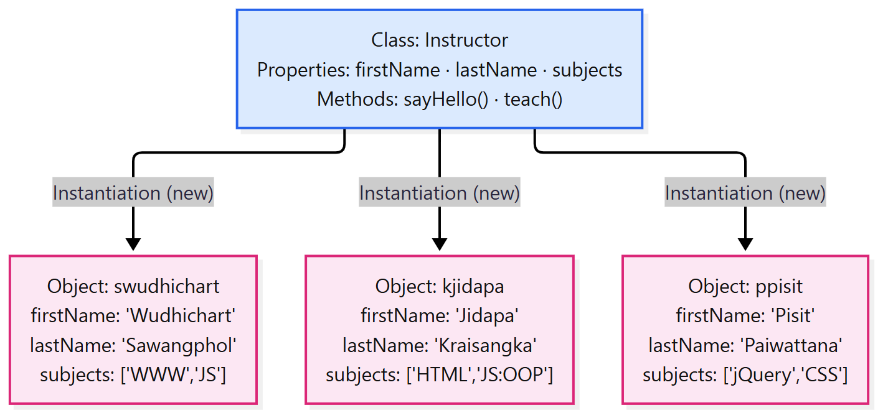
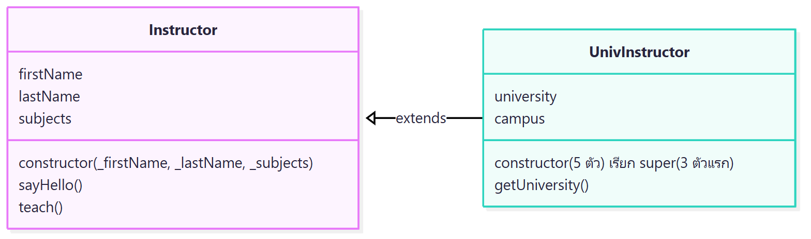
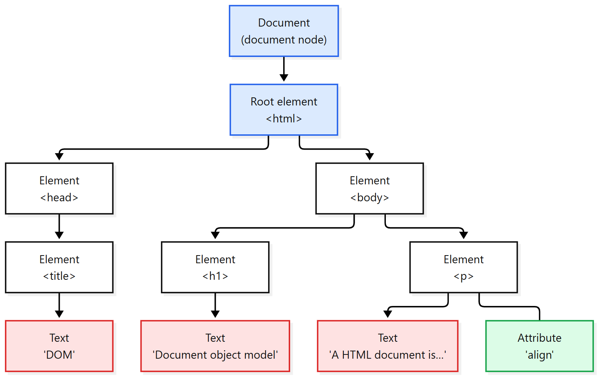
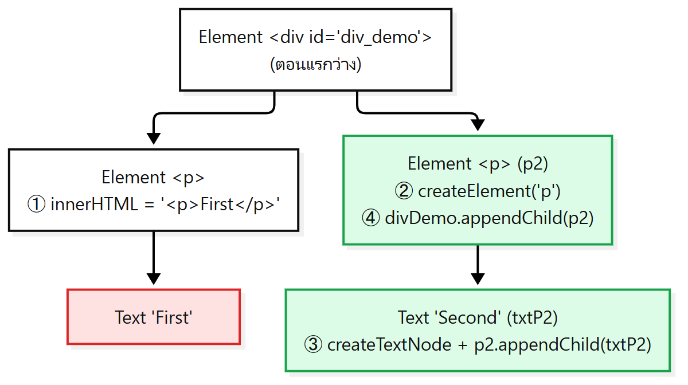
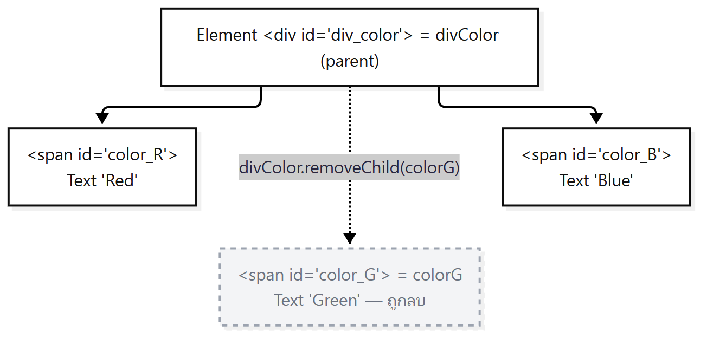
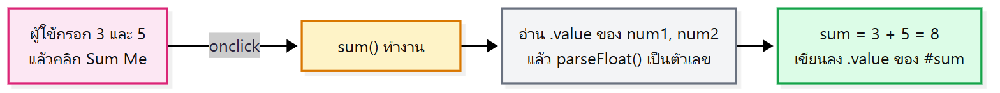
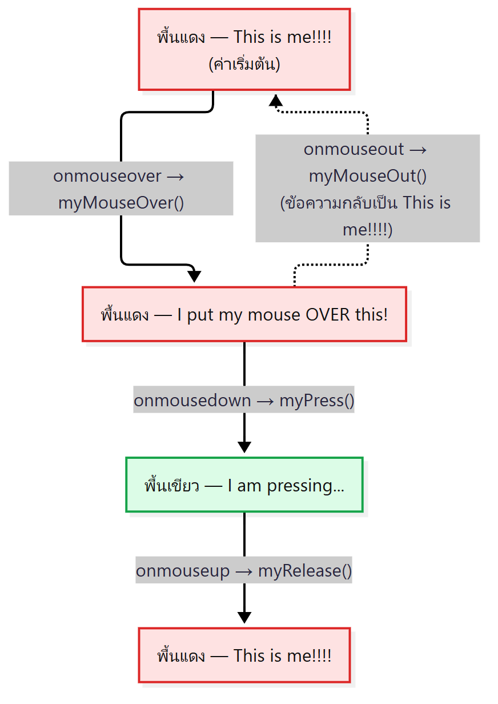

ภาพรวมบทนี้: ต่อจาก JS Part 1 บทนี้มี 3 ส่วน: (1) Functions — ทำไมต้องใช้, function ที่ return / ไม่ return, parameter + default value, arrow function, constructor function, first-class / high-order / callback function, แล้วต่อด้วย scope & lifetime ของตัวแปร (global, local, block, module) และ closure (2) OOP ใน JS — class, object,
constructor,new, การสืบทอดด้วยextends+super(3) DOM — หน้า HTML คือ tree ของ node, ใช้ JS หา/สร้าง/ลบ/แก้ element และตอบสนอง events (onclick, mouse events,addEventListener)ไม่มีโจทย์คำนวณ แต่มี โค้ดเยอะ และมีสไลด์ที่เว้นช่อง OUTPUT ให้เติมเอง (สไลด์ 38, 41, 42) — เฉลยไว้ในหัวข้อ 9.4, 10.2, 10.3 (รันจริงด้วย node และ headless Chrome ตรวจแล้วทุกตัวอย่าง)
📌 เลข
(สไลด์ N)ในไฟล์นี้ = เลขหน้าใน PDF (69 หน้า) — เลขที่พิมพ์มุมขวาล่างของสไลด์ตรงกันแค่หน้า 1–7 หลังจากนั้นเลขพิมพ์จะมากกว่า เพราะบางสไลด์ถูกตัดออกจาก PDF(เช่น หน้า 8 = พิมพ์ 10, หน้า 10 = พิมพ์ 14, หน้า 30 = พิมพ์ 34, หน้า 43 = พิมพ์ 50, หน้า 57 = พิมพ์ 69, หน้า 69 = พิมพ์ 83)

0. บทนี้ต้องได้อะไร?
แก่นสร้างและใช้ function ใน JS ได้ · อธิบาย OOP ใน JS ได้ · อธิบาย HTML DOM ได้ · เอา OOP + DOM ไปเขียนโปรแกรม JS ได้
- สไลด์ 1: หน้าปก ITDS241 Web Technologies and Applications หัวข้อ "Object-Oriented Programming in JavaScript" (ผู้สอน Asst. Prof. Wudhichart Sawangphol)
- Class Objectives (สไลด์ 2) — นักศึกษาจะสามารถ:
- สร้างและใช้ function ใน JS
- อธิบายแนวคิด OOP ใน JS
- อธิบายแนวคิด HTML Document Object Model (DOM)
- นำ OOP และ DOM ไปใช้ เขียนโปรแกรม JS
1. ทำไมต้องใช้ function และ function มีกี่แบบ?
แก่นfunction ช่วยให้โค้ดใช้ซ้ำได้ แบ่งปัญหาเป็นส่วนเล็ก จัดระเบียบ และแก้ง่าย · แบ่งเป็น 2 แบบคือ ไม่ return ค่า กับ return ค่า · รับ parameter ได้ และตั้ง default value ให้ parameter ได้
1.1 ทำไมต้องใช้ function?
แก่น4 เหตุผล — Reusability, Modularity, Organization, Maintainability
| เหตุผล | ความหมายตามสไลด์ | เปรียบเหมือน |
|---|---|---|
| Code Reusability | เขียนโค้ดเป็นก้อนที่ เรียกใช้ซ้ำได้ | สูตรอาหารที่เขียนครั้งเดียว ทำกี่รอบก็ได้ |
| Modularity | ช่วย แตกปัญหาใหญ่ที่ซับซ้อน เป็นส่วนเล็กที่จัดการได้ | แบ่งงานกลุ่มเป็นหน้าที่ย่อยให้แต่ละคน |
| Code Organization | ให้วิธี จัดโครงสร้างโค้ด อย่างเป็นระบบ | จัดของเข้าลิ้นชักแยกหมวด |
| Code Maintainability | จะแก้/ซ่อมความสามารถไหน ก็ แก้แค่ function นั้น โดยไม่กระทบส่วนอื่นของโค้ด | ซ่อมหลอดไฟดวงเดียว ไม่ต้องรื้อทั้งบ้าน |
1.2 function ในบทนี้มีชนิดไหนบ้าง?
แก่นบทนี้สอน 6 ชนิด — Function, Constructor, First Class, High-order, Callback, Arrow
| ชนิด | อยู่หัวข้อ |
|---|---|
| Function (ธรรมดา) | 1.3–1.4 |
| Constructor Function | 3 |
| First Class Function | 4 |
| High-order Function | 5 |
| Callback Function | 6 |
| Arrow Function | 2 |
1.3 function แบบ return กับไม่ return ต่างกันยังไง?
แก่นไม่ return = ทำงานอย่างเดียว (เช่นเด้ง alert) · return = ส่งค่ากลับไปให้คนเรียกเอาไปใช้ต่อ
// Not return value — ทำงาน (แสดง alert) แต่ไม่ส่งค่ากลับ
function showMessage() {
alert('Hello everyone!');
}
// Return value — คืนผลบวกกลับไปให้ผู้เรียก
function sum(a, b) {
return a + b;
}
sum(2, 3)ได้ค่า5กลับมา เอาไปเก็บในตัวแปรหรือใช้ต่อได้ (รันตรวจแล้ว)
1.4 parameter คืออะไร ตั้ง default value ยังไง?
แก่นข้อมูลที่ส่งเข้า function เรียกว่า Parameters หรือ Arguments · ใส่ ชื่อ = ค่า ในวงเล็บเพื่อตั้ง default value (ใช้เมื่อผู้เรียกไม่ได้ส่งมา)
- function ใน JS รับข้อมูลอะไรก็ได้ (arbitrary data) ส่งเข้าไป ข้อมูลนั้นเรียกว่า Parameters หรือ Arguments
function showMessagefromuser(from, text) {
alert(from + ': ' + text);
}
- Parameter ตั้ง default value ได้:
function showMessagefromuser(from, text="no message")
{
alert(from + ': ' + text);
}
- ถ้าเรียก
showMessagefromuser("Ann")(ไม่ส่ง text) →textใช้ค่า default → alert แสดงAnn: no message· ถ้าส่ง"Hi"มา →Ann: Hi(รันตรวจแล้ว)
2. Arrow function เขียนยังไง?
แก่นarrow function = เขียน function แบบสั้น (args) => expression · บรรทัดเดียวคืนค่า expression ให้เลย · ถ้าหลายบรรทัดต้องใส่ { } และเขียน return เอง
- arrow function มี syntax ที่สั้นและกระชับ สำหรับสร้าง function (สไลด์ 8)
- สองแบบนี้เทียบกัน (สไลด์ 8):
let func = function (arg1, arg2, ...argN) {
return expression;
};
let func = (arg1, arg2, ...argN) => expression
ตัวอย่าง (สไลด์ 9):
| กรณี | โค้ด | อธิบาย |
|---|---|---|
| ทั่วไป | let sum = (a,b) => a + b; |
รับ a, b คืน a + b (เช่น sum(1,2) → 3) |
| ไม่มี parameter | let sayHello = () => alert("Hello!"); |
ไม่มี parameter ต้องใส่ () ว่าง |
| หลายบรรทัด | ดูโค้ดด้านล่าง | ต้องมี { } และ return |
let subtract = (a, b) => {
let result = a - b;
return result;
};
// subtract(5, 3) → 2 (รันตรวจแล้ว)
💡 จำ: arrow แบบ ไม่มี
{ }= คืนค่าให้อัตโนมัติ · มี{ }= ต้องเขียนreturnเอง
3. Constructor function คืออะไร ใช้สร้าง object ยังไง?
แก่นconstructor function = function ที่ใช้เป็นแม่พิมพ์สร้าง object หลายตัวที่มี property ชุดเดียวกัน · เรียกด้วย new · ข้างในใช้ this อ้างถึง object ที่กำลังสร้าง
3.1 ทำไมต้องมี constructor function และมีกฎอะไร?
แก่นใน OOP เรามักอยากได้ object หลายตัวที่มี property ชุดเดียวกัน (จะได้ประมวลผลแบบเดียวกันโดยไม่ error) → constructor function ทำให้ได้ object ที่มี property ครบชุดเหมือนกันทุกตัว
- ปกติใน OOP เราอยากสร้าง object หลายตัวที่มี property ชุดเดียวกัน เพราะจะได้ประมวลผลแบบเดียวกันได้โดยไม่ error (สไลด์ 10)
- constructor function เป็น กลไกสร้าง object ที่มีชุด property เหมือนกัน (สไลด์ 10)
- สร้างแบบเดียวกับ function ปกติ (สไลด์ 10)
- กฎ/คุณสมบัติ (สไลด์ 11):
- เรียกด้วย operator
new - ใน constructor function คำว่า
thisหมายถึง object ที่กำลังถูกสร้าง - object ใหม่ทุกตัว ได้ชุด property ที่เหมือนกัน (consistent set)
- กำหนดค่าเริ่มต้นของ property ผ่าน parameter ของ function ได้
- ใส่ function ข้างในได้ทั้ง public (ใช้
this) และ private (ใช้var,let)
- เรียกด้วย operator
💡 เปรียบเหมือน แม่พิมพ์ขนม: แม่พิมพ์ (constructor function) อันเดียว กดออกมา (
new) กี่ชิ้นก็ได้รูปทรงเดียวกัน แต่ไส้ (ค่าที่ส่งเข้า parameter) ต่างกันได้
3.2 ตัวอย่าง constructor function Person
แก่นใช้ this.ชื่อ = parameter ตั้ง property แล้ว new Person(...) สร้าง object
function Person(firstName, lastName, age) {
this.firstName = firstName;
this.lastName = lastName;
this.age = age;
this.getInfo = function(){
return this.firstName + " " + this.lastName + " Age is "
+ this.age;
};
}
var person1 = new Person("Wudhichart", "Sawangphol", 30);
this.firstName,this.lastName,this.age= property ของ object ·this.getInfo= method (public เพราะใช้this)- ถ้าเรียก
person1.getInfo()จะได้"Wudhichart Sawangphol Age is 30"(รันตรวจแล้ว — สไลด์ไม่ได้เรียกให้ดู)
3.3 constructor function ทำอะไรได้อีก?
แก่นเพิ่ม property ให้ object ทีหลังได้ (on the fly) และ constructor function สืบทอด (inherit) จาก constructor function อื่นได้
- property ของ object เพิ่มได้ทันทีระหว่างทาง (on the fly) — ไม่ต้องประกาศไว้ก่อนใน constructor (ดูตัวอย่างจริงกับ class ในหัวข้อ 10.3 ที่เพิ่ม
nickName) - constructor function สามารถ inherit constructor function อื่นได้
⚠️ สไลด์ 13 เขียน "See example." แต่ใน PDF ไม่มีหน้าตัวอย่างของเรื่องนี้ (การ inherit ระหว่าง constructor function) — ถ้าอาจารย์โชว์ในคาบ ให้จดเพิ่ม
4. First-class function คืออะไร ทำอะไรได้บ้าง?
แก่นภาษาที่มี first-class functions = ภาษาที่ function ถูกใช้เหมือนตัวแปรทั่วไป → assign ให้ตัวแปรได้ · ส่งเป็น argument ได้ · return ออกจาก function ได้ · เก็บใน data structure ได้
- นิยาม (สไลด์ 14): ภาษาหนึ่งจะเรียกว่ามี First-class Functions เมื่อ function ในภาษานั้นถูกปฏิบัติเหมือนตัวแปรอื่น ๆ
- ความสามารถนี้ใช้ได้ผลดีมากใน paradigm ที่เรียกว่า functional programming

4.1 Assign function ให้ตัวแปร
แก่นfunction ที่ไม่มีชื่อ (anonymous / expression function) เก็บใส่ตัวแปรได้ แล้วเรียกผ่านชื่อตัวแปร
//Create an anonymous function
var function2 = function (wide) {
var area;
area = Math.pow(wide, 2);
return area;
};
Math.pow(wide, 2)= wide ยกกำลัง 2 (พื้นที่สี่เหลี่ยมจัตุรัส) →function2(3)ได้9
4.2 ส่ง function เป็น argument
แก่นflexible รับ function (fOperation) เข้ามา แล้วเรียกมันกับ operand สองตัว — จะบวก/ลบ/คูณ ขึ้นกับ function ที่ส่งมา
function flexible(fOperation, operand1, operand2) {
var result = fOperation(operand1, operand2);
return result;
}
let sumFunction = function (num1, num2) {
return num1 + num2;
};
output = flexible(sumFunction, 3, 4);
- ทีละขั้น:
fOperation=sumFunction→sumFunction(3, 4)=3 + 4→output = 7(รันตรวจแล้ว)
4.3 Return function ออกมา
แก่นfunction คืน arrow function ออกมาได้ ตัวที่ได้รับเก็บไว้แล้วค่อยเรียกทีหลัง
const calculateAreaofSquare2 = function (wide) {
var area;
area = Math.pow(wide, 2);
return () => {
console.log(`calculateAreaofSquare2: ${area}`);
};
};
let areaOfSquare = calculateAreaofSquare2(4);
areaOfSquare();
- ทีละขั้น:
calculateAreaofSquare2(4)→area = 4² = 16→ คืน function (ยังไม่พิมพ์อะไร) → เก็บในareaOfSquare→ เรียกareaOfSquare()→ พิมพ์calculateAreaofSquare2: 16(รันตรวจแล้ว) - function ที่ถูกคืนออกมายัง "จำ" ค่า
areaได้ — นี่คือเรื่อง closure ในหัวข้อ 8
4.4 เก็บ function ใน data structure
แก่นใส่ function ลงใน array ได้ แล้วเรียกผ่าน index เช่น myFuncs[0](5)
let myFuncs = [calculateAreaofSquare];
console.log(`calculateAreaofSquare: ${myFuncs[0](5)}`);
myFuncs[0]คือ functioncalculateAreaofSquare(นิยามไว้ในสไลด์ 19) →myFuncs[0](5)= 5² = 25 → พิมพ์calculateAreaofSquare: 25(รันตรวจแล้ว)
⚠️ สไลด์ 18 ใช้
calculateAreaofSquareที่ยังไม่ได้นิยาม — ตัว function อยู่สไลด์ถัดไป (สไลด์ 19) ถ้าลองรันต้องมีโค้ดสไลด์ 19 ด้วย
5. High-order function คืออะไร?
แก่นhigh-order function = function ที่รับ function อื่นเป็น argument หรือ return function ออกมา · ตัวอย่างในสไลด์คือ map และ filter ของ array
- นิยาม (สไลด์ 19): High-order functions คือ function ที่ รับ function อื่นเป็น argument หรือ return function เป็นผลลัพธ์
map — ส่ง function ไปทำกับทุกตัวใน array (สไลด์ 19)
function calculateAreaofSquare(wide) {
var area;
area = Math.pow(wide, 2);
return area;
}
let squareWide1 = [2, 7, 9, 10];
console.log("Map: " +
squareWide1.map(calculateAreaofSquare));
- ในสไลด์มีลูกศรชี้จากตัว function
calculateAreaofSquareไปที่ argument ของmap= ส่ง function ทั้งตัวเข้าไป (ไม่ใส่()) - ทีละขั้น: 2² = 4, 7² = 49, 9² = 81, 10² = 100 → พิมพ์
Map: 4,49,81,100(รันตรวจแล้ว — array ต่อกับ string จะคั่นด้วย,ไม่มีเว้นวรรค)
filter — เก็บเฉพาะตัวที่ function คืน true (สไลด์ 20)
const evenNumbers = squareWide1.filter((num) => num % 2 === 0);
console.log(`evenNumbers: ${evenNumbers}`);
- เงื่อนไข
num % 2 === 0= เป็นเลขคู่ → จาก[2, 7, 9, 10]เหลือ 2 กับ 10 → พิมพ์evenNumbers: 2,10(รันตรวจแล้ว)
6. Callback function คืออะไร?
แก่นcallback = function ที่เราส่งให้ API เรียกกลับทีหลัง ใช้ตอบสนองเหตุการณ์ที่เกิดแบบ asynchronous หรือคาดเดาไม่ได้ · เช่น setTimeout(greet, 2000)
- จุดประสงค์หลักของ callback (สไลด์ 21): ให้กลไกที่โปรแกรม ตอบสนองต่อ event หรือ action ที่เกิดขึ้นแบบ asynchronous (ไม่พร้อมกัน) หรือคาดเดาไม่ได้
- API (Application Programming Interfaces) = library ของ object และ method ที่เขียนไว้ให้ใช้แล้ว
- บาง function ของ API ต้องการ function เป็น parameter → เราต้องเขียน function นั้นเองตามรายการ parameter ที่เอกสาร API กำหนด → function นี้เรียกว่า Callback function
function greet(){
alert('Howdy!');
}
setTimeout(greet, 2000);
setTimeoutคือ API ที่รับ functiongreet(callback) กับเวลา2000→ เมื่อครบเวลาแล้ว API จะเรียกgreet()ให้เอง → เด้ง alert "Howdy!"- สังเกต: ส่ง
greet(ไม่มี()) = ส่งตัว function ไป ไม่ใช่เรียกทันที
⚠️ สไลด์ 22 พิมพ์
alert('Howdy!’);— ปิดด้วยเครื่องหมาย’(smart quote) ไม่ใช่'ถ้าก๊อปไปรันจริงจะได้ SyntaxError: Invalid or unexpected token (รันตรวจแล้ว) ตอนเขียนเองให้ใช้'Howdy!'
7. Scope และ Lifetime ของตัวแปรเป็นยังไง?
แก่นscope = ตัวแปรใช้ได้ถึงไหน · ประกาศนอก function = global (ทั้งหน้าเว็บ) · ใน function = local (ทั้ง function) · let/const = block scope · var = ผูกกับ function ที่ใกล้สุดหรือ global · module มี scope ของตัวเอง · ตัวแปรควรมี scope เล็กที่สุด

7.1 scope แบบ global กับ local ต่างกันยังไง?
แก่นประกาศนอกทุก function → global ใช้ได้ทั้งหน้าเว็บ · ประกาศใน function → local ใช้ได้ทั้ง function
- สไลด์เปรียบ: function เหมือนแผนกในสำนักงาน (office departments) — ของของแต่ละแผนกใช้ในแผนกนั้น
- (มีลิงก์วิดีโอ Scope: https://vimeo.com/202865903)
- ตัวแปรใน JavaScript เป็นแบบ lexically scoped ยกเว้น
var - ตัวแปรที่ ประกาศนอก function ใด ๆ → scope คือโค้ดทั้งหมดของหน้าเว็บ → Global variable
- ตัวแปรที่ ประกาศใน function → scope คือทั้ง function → Local variable
- Note! ตัวแปรควรมี scope เล็กที่สุดเท่าที่ทำได้
7.2 block scope คืออะไร?
แก่นconst myName ที่ประกาศใน if { } ใช้ได้แค่ในบล็อกนั้น ถ้าเรียกนอกบล็อกจะได้ ReferenceError
<script type="text/javascript">
if (true) {
const myName = "Wudhichart";
console.log(myName);
}
console.log(myName); // Uncaught ReferenceError: myName is not defined
</script>
- สไลด์ 24 (ไม่มีบรรทัดสุดท้าย):
myNameเป็น block-scoped ของ if → เข้าถึงได้ จากในบล็อกเท่านั้น → พิมพ์Wudhichart - สไลด์ 25 (เพิ่มบรรทัดสุดท้าย): เรียก
myNameนอกบล็อก → ReferenceError เพราะอยู่นอก scope - ผลรันจริงใน Chrome: บรรทัดแรกพิมพ์
Wudhichartแล้วตามด้วยUncaught ReferenceError: myName is not defined✔ ตรงกับสไลด์
7.3 let, const, var มี scope ต่างกันยังไง?
แก่นlet/const = block scope · var = scope ของ function ที่ใกล้ที่สุด (หรือ global) → var ที่ประกาศใน if ยังใช้นอก if ได้ ถ้าอยู่ใน function เดียวกัน
| keyword | scope |
|---|---|
let, const |
block-scoped (เฉพาะใน { } ที่ประกาศ) |
var |
function ที่ใกล้ที่สุด หรือ global scope |
function displayFullname() {
if (true) {
var myFullname = "Wudhichart Sawangphol";
}
console.log(myFullname);
}
displayFullname();
- สไลด์บอก "There is no error." —
var myFullnameผูกกับ functiondisplayFullnameไม่ใช่กับ if → ใช้นอก if ได้ → พิมพ์Wudhichart Sawangphol(รันตรวจแล้ว ✔)
⚠️ เทียบกับ 7.2: ถ้าเปลี่ยน
varเป็นconst/letแบบสไลด์ 25 → error · ใช้var→ ไม่ error
7.4 Global scope กับ Module scope ต่างกันยังไง?
แก่นตัวแปรระดับบนของ <script> ธรรมดาเป็น global → <script> อีกอันใช้ได้ · แต่ <script type="module"> แต่ละ module มี scope ของตัวเอง → script อื่นเรียกไม่ได้ (ReferenceError)
Global Scope (สไลด์ 27)
<script type="text/javascript">
const myFullname = "Wudhichart Sawangphol";
</script>
<script type="text/javascript">
// Global and Module Scope
console.log(myFullname);
</script>
myFullnameประกาศใน script แรก ใช้ใน script ที่สองได้ → พิมพ์Wudhichart Sawangphol(รันใน Chrome ✔)
Module Scope (สไลด์ 28) — แต่ละ module มี scope ของตัวเอง
<script type="module">
const jidapa = "Jidapa Kraisangka";
</script>
<script type="text/javascript">
// Global and Module Scope
console.log(jidapa); // Uncaught ReferenceError: jidapa is not defined
</script>
jidapaอยู่ใน module → script ธรรมดาเรียกไม่ได้ → ReferenceError (รันใน Chrome ✔ ได้Uncaught ReferenceError: jidapa is not defined)
7.5 ตัวแปรอยู่ได้นานแค่ไหน (Lifetime)?
แก่นglobal อยู่ตั้งแต่ประกาศจนปิดหน้าเว็บ · local อยู่ตั้งแต่ function ถูกเรียกจน function จบ · ถ้าชื่อซ้ำกัน ใช้ตัว local
| ชนิด | Lifetime (อยู่ได้นานแค่ไหน) |
|---|---|
| Global variable | ตั้งแต่ ประกาศ จนถึง ปิดหน้าเว็บ |
| Local variable | ตั้งแต่ function ที่ประกาศมันถูกเรียก จนถึง function นั้นจบการทำงาน |
- ถ้า global กับ local ชื่อเดียวกัน → ใช้ตัว local (ในฟังก์ชันนั้น)
8. Closure คืออะไร?
แก่นclosure = function + การอ้างอิงถึงตัวแปรที่อยู่นอกตัวมัน · ทำให้ function ยังเข้าถึงตัวแปรนอก scope ของตัวเองได้ แม้ function ภายนอกจะทำงานจบไปแล้ว
- A closure is a function combined with references to the variables defined outside of it.
- closure เก็บ reference ของตัวแปรไว้ → function เข้าถึงตัวแปรที่อยู่นอก scope ของตัวเองได้
//Closures
function displayFullname(name) {
return () => console.log(name);
}
const printFullname = displayFullname("Wudhichart Sawangphol");
printFullname();
- ทีละขั้น: เรียก
displayFullname("Wudhichart Sawangphol")→ คืน arrow function ที่ใช้name→displayFullnameจบแล้ว แต่ arrow function ยัง "จำ"nameได้ →printFullname()พิมพ์Wudhichart Sawangphol(รันตรวจแล้ว)
💡 เปรียบเหมือนกระเป๋าเป้: function ที่ถูกส่งออกมา แบกตัวแปรจากบ้านเดิม (
name) ติดตัวไปด้วย จึงหยิบใช้ได้แม้ออกจากบ้านมาแล้วตัวอย่างหัวข้อ 4.3 (
calculateAreaofSquare2) ก็ใช้หลักเดียวกัน — function ที่คืนออกมายังจำareaได้
9. OOP คืออะไร — class กับ object ต่างกันยังไง เขียนใน JS ยังไง?
แก่นOOP มองโปรแกรมเหมือนของในชีวิตจริง · class = แม่แบบ (properties + methods) · object = class ที่ใส่ค่าจริงแล้ว (สร้างด้วย new เรียกว่า instantiation) · ใน JS ใช้ class ชื่อ { constructor(){...} method(){...} }
9.1 OOP คืออะไร?
แก่นOOP = Object-oriented programming ใช้แนวคิดเดียวกับการแทนสิ่งของจริง และกำหนดทั้งชนิดข้อมูลของโครงสร้างข้อมูล และ function ที่ใช้กับข้อมูลนั้น
- OOP: Object-oriented programming
- ใช้แนวคิดเดียวกับที่เรา แทนสิ่งต่าง ๆ ในชีวิตจริง เช่น รถ คน บัญชีธนาคาร
- กำหนดชนิดข้อมูล (data type) ของ data structure และ ชนิดของ function ที่ใช้กับ data structure นั้น
9.2 Class กับ Object ต่างกันยังไง?
แก่นclass = แม่แบบที่บอกว่ามี property และ method อะไร · object = class ที่เติม "ค่า" แล้ว และมีทุก property/method ของ class · การสร้าง object จาก class เรียกว่า Instantiation
- Class = template หรือ model ของ object ประกอบด้วย properties และ functions (สไลด์ 33)
- ตัวอย่าง Class: Instructor
| ส่วน | สมาชิก |
|---|---|
| Properties | firstName, lastName, subjects |
| Methods | sayHello("Hey! I am [firstName]. Nice to meet you!!"), teach("I teach [subjects].") |
- Object = class ที่เติม "values" แล้ว เมื่อ object ถูก instantiate จาก class มันจะ มีทุก property และ method ที่นิยามใน class (สไลด์ 34)

| Object | firstName | lastName | subjects | sayHello | teach |
|---|---|---|---|---|---|
swudhichart |
"Wudhichart" | "Sawangphol" | ["WWW","JS"] | Hey! I am Wudhichart. Nice to meet you!! | I teach WWW,JS. |
kjidapa |
"Jidapa" | "Kraisangka" | ["HTML","JS:OOP"] | Hey! I am Jidapa. Nice to meet you!! | I teach HTML, JS:OOP. |
ppisit |
"Pisit" | "Paiwattana" | ["jQuery","CSS"] | Hey! I am Pisit. Nice to meet you!! | I teach jQuery,CSS. |
💡 เปรียบเหมือน แบบฟอร์มสมัครเรียน (class) มีช่องชื่อ นามสกุล วิชา · ใบที่กรอกแล้ว (object) แต่ละใบมีช่องเหมือนกันแต่ค่าในช่องต่างกัน
9.3 นิยาม class ใน JS ยังไง?
แก่นclass ชื่อ { constructor(...) { this.prop = ...; } method1(){...} } · constructor ถูกเรียกทุกครั้งที่สร้าง object
Syntax (สไลด์ 35):
class className {
constructor(prop1,prop2,…){
/*Property definition
and assignment*/
}
/* Method definition */
method1(){/* do something */}
method2(){/* do something */}
}
- method
constructorถูกเรียกทุกครั้งที่สร้าง (initiate) object
ตัวอย่าง Instructor Class (สไลด์ 36):
class Instructor {
/* Constructor */
constructor(_firstName, _lastName, _subjects)
{
/* Properties */
this.firstName = _firstName;
this.lastName = _lastName;
this.subjects = _subjects;
}
/* Methods*/
sayHello() {
return "Hey! I'm " + this.firstName + ". Nice to meet you!!!";
}
teach() {
return "I teach " + this.subjects + ".";
}
}
- parameter ขึ้นต้นด้วย
_(_firstName) แล้วเอาไปเก็บในthis.firstName= property ของ object - Note: อย่าลืมเขียนไว้ใน
<script type="application/javascript">…</script>
9.4 สร้าง object และใช้ property / method ยังไง?
แก่นต้องนิยาม class ก่อนสร้าง object · new className(...) เรียก constructor · อ่าน/แก้ property ด้วย obj.propName · เรียก method ด้วย obj.methodName()
กฎและรูปแบบ (สไลด์ 37):
- Class ต้องถูกนิยามก่อน สร้าง object
- ใช้
newเรียก constructor ของ class เพื่อสร้าง object ด้วยค่าที่กำหนด
let obj = new className(prop1,prop2,…);
/* Get a value of a property */
console.log(obj.propName);
/* Assign a new value to a property */
obj.propName = newValue;
/* Call a method */
obj.methodName();
ตัวอย่าง: Object ของ Instructor class (สไลด์ 38) — สไลด์เว้นช่อง OUTPUT ไว้ให้เติม
/* Initiate an object of the Instructor class */
let jkSubjects = ["HTML","OOP:JS"];
let kjidapa = new Instructor("Jidapa", "Kraisangka",
jkSubjects);
/* Display firstName and lastName in the console */
console.log(kjidapa.firstName + " " + kjidapa.lastName);
/* Change firstName from "Jidapa" to "Aj. Pa" */
kjidapa.firstName = "Aj. Pa";
console.log(kjidapa.firstName);
/* Call sayHello() and teach() and
display in the console */
console.log(kjidapa.sayHello());
console.log(kjidapa.teach());
เฉลย OUTPUT (รันจริงด้วย node):
Jidapa Kraisangka
Aj. Pa
Hey! I'm Aj. Pa. Nice to meet you!!!
I teach HTML,OOP:JS.
ทีละขั้น:
firstName + " " + lastName→Jidapa Kraisangka- เปลี่ยน
firstNameเป็น"Aj. Pa"แล้วพิมพ์ →Aj. Pa sayHello()ใช้this.firstNameซึ่ง ถูกเปลี่ยนแล้ว →Hey! I'm Aj. Pa. Nice to meet you!!!(ไม่ใช่ Jidapa)teach()เอา array["HTML","OOP:JS"]ต่อกับ string → array กลายเป็นHTML,OOP:JS(คั่น,ไม่มีเว้นวรรค) →I teach HTML,OOP:JS.
⚠️ กล่อง "Object: kjidapa" ในสไลด์ 34 และ 38 เขียน
subjects: ["HTML","JS:OOP"],sayHello("Hey! I am Jidapa. ...!!"),teach("I teach HTML, JS:OOP.")แต่ โค้ดจริง ใช้["HTML","OOP:JS"]และ"Hey! I'm ... !!!"→ ผลรันจริงตามโค้ดคือI teach HTML,OOP:JS.กับHey! I'm ...!!!— ถ้าข้อสอบถาม output ให้ตอบตามโค้ด Note (สไลด์ 38): classInstructorต้องถูกนิยามก่อนสร้าง object
10. Inheritance และ Polymorphism ทำยังไงใน JS?
แก่นsubclass สืบทอดทุก property และ method ของ superclass (inheritance) และมี property/method เฉพาะของตัวเองเพิ่มได้ (สไลด์เรียกส่วนนี้ว่า polymorphism) · ใช้ extends สร้าง subclass และเรียก super(...) ใน constructor เพื่อส่งค่าให้ superclass
10.1 syntax ของ subclass เป็นยังไง?
แก่นclass sub extends super { constructor(...) { super(...); this.prop = ...; } method(){...} } · กำหนดแค่ method ที่เป็นของ subclass เอง เพราะ method ของ superclass ได้มาอยู่แล้ว
- object บางตัวมี property และ method ต่างออกไป นอกเหนือจากส่วนทั่วไปที่ได้จาก superclass (สไลด์ 39)
- subclass สืบทอดทุก property และ method ของ superclass (inheritance) แต่ มี property และ method เฉพาะของตัวเองได้ (polymorphism) — ตามนิยามในสไลด์
- ใช้
extendsสร้าง subclass ที่สืบทอดจาก superclass
class subclassName extends superclassName {
constructor(cprop1,cprop2,…, scprop1,scprop2,…){
/* Properties inherited from the superclass */
super(cprop1,cprop2,…);
/* Properties of the subclass */
this.scprop1 = scprop1;
…
}
/* Superclass's methods also inherited from the superclass */
/* Only define methods that are unique for the subclass */
subclassMethod1(){/* do something here */} …
}
ตัวอย่าง UnivInstructor Class (สไลด์ 40) — Superclass: Instructor, Subclass: UnivInstructor
/* Superclass:Instructor, Subclass:UnivInstructor*/
class UnivInstructor extends Instructor {
/* Constructor */
constructor(_firstName, _lastName, _subjects,
_university, _campus)
{
/* Properties from the superclass */
super(_firstName,_lastName,_subjects);
/* Properties only in the subclass */
this.university = _university;
this.campus = _campus;
}
/* Methods also inherited from the superclass */
getUniversity() {
return "My office is at " + this.university + ", " +
this.campus +".";
}
}
super(_firstName,_lastName,_subjects)= ส่ง 3 ค่าแรกให้ constructor ของInstructorตั้ง property ให้university,campus= property ที่มีเฉพาะใน subclass ·getUniversity()= method เฉพาะ subclass- Note: class
Instructorต้องถูกนิยามก่อนนิยาม subclassUnivInstructor

| Class: UnivInstructor มี | ได้มาจาก |
|---|---|
firstName, lastName, subjects, sayHello(), teach() |
สืบทอดจาก Instructor |
university, campus, getUniversity() |
ของ subclass เอง (สไลด์ทำตัวหนาไว้) |
⚠️ ในสไลด์ 40 กล่อง class เขียนชื่อว่า "UniInstructor" แต่โค้ดใช้
UnivInstructor(มี v) — ชื่อที่ถูกตามโค้ดคือUnivInstructor⚠️ comment ในโค้ด
/* Methods also inherited from the superclass */วางอยู่เหนือgetUniversity()ซึ่งเป็น method ของ subclass เอง (ไม่ได้สืบทอดมา) — comment นี้น่าจะหมายถึง "method ของ superclass ก็ได้มาด้วย" ตามที่สไลด์ 39 เขียน
10.2 สร้าง object ของ subclass แล้วเรียก method ได้อะไร?
แก่นobject ของ subclass เรียก method ของ superclass (sayHello, teach) ได้ทันที และเรียก method ของตัวเอง (getUniversity) ได้
/* Instantiate an object of the UnivInstructor class */
let jkSubjects = ["HTML","OOP:JS"];
let kjidapa2 = new UnivInstructor("Jidapa","Kraisangka",
jkSubjects,"Mahidol University","Salaya");
/* Display firstName and university in the console */
console.log(kjidapa2.firstName +"@"+ kjidapa2.university);
/* All methods from the superclass are inherited */
console.log(kjidapa2.sayHello());
console.log(kjidapa2.teach());
/* Call getUniversity() method */
console.log(kjidapa2.getUniversity());
Object kjidapa2 (ตามกล่องในสไลด์): firstName "Jidapa", lastName "Kraisangka", subjects ["HTML","JS:OOP"], university "Mahidol University", campus "Salaya", มี sayHello(), teach(), getUniversity()
เฉลย OUTPUT (รันจริงด้วย node):
Jidapa@Mahidol University
Hey! I'm Jidapa. Nice to meet you!!!
I teach HTML,OOP:JS.
My office is at Mahidol University, Salaya.
- บรรทัด 2–3 มาจาก method ที่ สืบทอดจาก Instructor · บรรทัด 4 มาจาก method ของ subclass เอง
💡 สไลด์ 38 กับ 41 เป็นคนละตัวอย่าง:
kjidapa2เป็น object ใหม่ จึงยังชื่อJidapa(การเปลี่ยนเป็น "Aj. Pa" ในสไลด์ 38 ทำกับkjidapaคนละตัว)
10.3 ถ้าใช้ property / method ที่ไม่ได้นิยามไว้จะเกิดอะไร?
แก่นอ่าน property ที่ไม่มี → undefined (ไม่ error) และเพิ่ม property ทีหลังได้ · แต่เรียก method ที่ไม่มี → TypeError (error) · เพิ่ม method ทีหลังได้ด้วยการ assign function ให้ property
/* What if we try adding an undefined property */
console.log(kjidapa2.nickName);
kjidapa2.nickName = "Pa";
console.log(kjidapa2.nickName);
/* What if we try calling an undefined function */
kjidapa2.sayMyName();
kjidapa2.sayMyName = function () {
return "I am " + this.firstName +
" or " + this.nickName;
}
console.log(kjidapa2.sayMyName());
กล่อง Object ในสไลด์มี nickName: ?? และ sayMyName() ?? (สีแดง) = ให้คิดว่าจะเกิดอะไร
เฉลย OUTPUT (รันจริงด้วย node):
| บรรทัด | ผล | เหตุผล |
|---|---|---|
console.log(kjidapa2.nickName); |
undefined |
ยังไม่มี property นี้ → ได้ undefined ไม่ error |
kjidapa2.nickName = "Pa"; แล้ว log |
Pa |
เพิ่ม property ได้ on the fly |
kjidapa2.sayMyName(); |
Uncaught TypeError: kjidapa2.sayMyName is not a function |
method ที่ยังไม่มี = undefined เอามาเรียกด้วย () ไม่ได้ |
console.log(kjidapa2.sayMyName()); |
I am Jidapa or Pa |
ได้ก็ต่อเมื่อ บรรทัด error ข้างบนไม่หยุด script (เช่นลบทิ้งหรือแยกรัน) |
⚠️ ถ้ารันทั้งก้อนตามสไลด์ใน script เดียว: TypeError ที่
kjidapa2.sayMyName();ทำให้ script หยุด → output จริงมีแค่undefined·Pa· แล้ว error (รันตรวจด้วย node แล้ว) — บรรทัดI am Jidapa or Paจะไม่ถูกพิมพ์💡 เทียบ: property ที่ไม่มี →
undefined/ method ที่ไม่มี →TypeError: ... is not a function
11. DOM คืออะไร และหน้า HTML กลายเป็น tree ยังไง?
แก่นDOM = มาตรฐาน W3C ที่เป็น programming interface ให้ script เข้าถึงและแก้ เนื้อหา โครงสร้าง และ style ของเอกสารได้ · หน้า HTML ถูกสร้างเป็น tree ของ object ทุกอย่างคือ node (document, element, text, attribute, comment)
11.1 DOM คืออะไร มีกี่ส่วน?
แก่นDOM เป็นมาตรฐาน W3C แบ่ง 3 ส่วน: Core DOM (เอกสารมีโครงสร้างทุกชนิด), XML DOM (XML), HTML DOM (HTML)
- DOM เป็น มาตรฐานของ W3C (World Wide Web Consortium)
- DOM คือ programming interface สำหรับเอกสารเว็บ
- ให้โปรแกรมและ script เข้าถึงและอัปเดต content, structure, style ของเอกสารได้แบบ dynamic
- DOM แบ่งเป็น 3 ส่วน:
| ส่วน | เป็นชุด object มาตรฐานสำหรับ |
|---|---|
| Core DOM | เอกสารที่มีโครงสร้าง (structured document) ทุกชนิด |
| XML DOM | เอกสาร XML |
| HTML DOM | เอกสาร HTML |
11.2 หน้า HTML เป็น tree ยังไง?
แก่นหน้า HTML ถูกสร้างเป็น tree ของ object — เข้าถึงทุก element/text/attribute ผ่าน DOM ได้ แก้/ลบ/สร้างใหม่ได้ และ HTML DOM ใช้กับภาษาไหนก็ได้
โค้ดตัวอย่าง (สไลด์ 45, อ้างอิง w3schools js_htmldom):
<html>
<head>
<title>DOM</title>
</head>
<body>
<h1>Document object model</h1>
<p align="left">
A HTML document is
constructed as
a tree of objects
</p>
</body>
</html>

- สีในรูป (ตามสไลด์ 48): น้ำเงิน = Document node · ดำ = Element node · แดง = Text node · เขียว = Attribute node
- สไลด์ 45 วาด element ใต้
<body>ตัวแรกเป็น<…>(สไลด์ 48 ระบุชัดว่าเป็น<h1>)
คุณสมบัติของ HTML DOM (สไลด์ 46):
- ทุก element ของ HTML พร้อม text และ attribute เข้าถึงได้ผ่าน DOM
- เนื้อหา แก้ไขหรือลบได้ และ สร้าง element ใหม่ได้
- HTML DOM ไม่ขึ้นกับ platform และภาษา (platform and language independent) — ใช้ได้กับภาษาใดก็ได้ เช่น Java, JavaScript, Python
11.3 node มีกี่ชนิด และสัมพันธ์กันยังไง?
แก่นทุกอย่างในเอกสารคือ node — document node, element node, text node, attribute node, comment node · node มีความสัมพันธ์แบบลำดับชั้น: parent/child, siblings, ancestor/descendant
ชนิดของ node (สไลด์ 47) — Everything in an html document is a node.
| สิ่งในเอกสาร | เป็น node ชนิด |
|---|---|
| เอกสารทั้งหมด | document node |
| ทุก tag HTML | element node |
| ข้อความใน element | text node |
| ทุก attribute ของ HTML | attribute node |
| comment | comment node |
- node มี ความสัมพันธ์แบบลำดับชั้น (hierarchical relationship) ต่อกัน
ความสัมพันธ์ใน tree (สไลด์ 49 — ใช้ tree เดียวกับรูปด้านบน)
| ความสัมพันธ์ | ตัวอย่างจากสไลด์ |
|---|---|
| Parent → Child | <head> เป็น parent ของ <title> (<title> เป็น child) |
| Siblings (พี่น้อง = parent เดียวกัน) | <h1> กับ <p> เป็น siblings (ลูกของ <body> ทั้งคู่) |
| Ancestor (บรรพบุรุษ — อยู่สูงกว่าหลายชั้นก็ได้) | <html> เป็น ancestor ของ text node ทุกตัว |
| Descendant (ลูกหลาน) | text node ทุกตัวเป็น descendant ของ <html> |
💡 จำแบบแผนผังครอบครัว: parent/child = พ่อแม่-ลูกติดกันชั้นเดียว · ancestor/descendant = บรรพบุรุษ-ลูกหลานห่างกันกี่ชั้นก็ได้ · siblings = พี่น้องพ่อแม่เดียวกัน
12. document กับ element มี method / property อะไรให้ใช้บ้าง?
แก่นJS จัดการได้ทุกส่วนของหน้า (element, attribute, event, CSS) ผ่าน object document · หา element ด้วย getElementById / getElementsByClassName / getElementsByTagName / querySelector / querySelectorAll · element มี innerHTML, textContent, childNodes ฯลฯ
12.1 document object ทำอะไรได้?
- JS จัดการได้ทุกส่วน ของเอกสาร HTML ทั้ง element, attribute, event, CSS ในหน้า
- object
documentมี method ให้ใช้มากมาย (รายละเอียดเพิ่ม: https://developer.mozilla.org/en/docs/Web/API/Document)
12.2 Summary of Document Methods
แก่นgetElementById คืนตัวเดียว (ตาม id) · getElementsBy... คืนหลายตัว (collection) · querySelector คืนตัวแรกที่ตรง CSS selector · querySelectorAll คืนทุกตัวที่ตรง · write/writeln เขียนลงเอกสาร
| Method | คำอธิบาย (ตามสไลด์) |
|---|---|
document.getElementById() |
คืน element ที่มี ID ตรงกับค่าที่ระบุ |
document.getElementsByClassName() |
คืน NodeList ของทุก element ที่มี class name ตามที่ระบุ |
document.getElementsByTagName() |
คืน NodeList ของทุก element ที่มี tag name ตามที่ระบุ |
document.write() |
เขียน HTML expression หรือโค้ด JavaScript ลงในเอกสาร |
document.writeln() |
เหมือน write() แต่ เพิ่มตัวขึ้นบรรทัดใหม่ (newline) ต่อท้ายแต่ละ statement |
document.querySelector() |
คืน Element ตัวแรก ในเอกสารที่ตรงกับ selector หรือกลุ่ม selector ที่ระบุ |
document.querySelectorAll() |
คืน static NodeList ของ element ในเอกสาร ทุกตัว ที่ตรงกับกลุ่ม selector |
💡 ดูที่ชื่อ: getElementById (ไม่มี s → ตัวเดียว) / getElementsBy... (มี s → หลายตัว)
12.3 Element object ประกอบด้วยอะไร?
แก่นelement object เป็นส่วนของเอกสาร HTML ที่ implement เป็น node ประกอบด้วย opening tag, attribute(s), text, closing tag
<h1 style="color:blue;">DOM Lesson one</h1>
| ส่วน | ในตัวอย่าง |
|---|---|
| An opening tag | <h1 … > |
| Attribute(s) | style="color:blue;" |
| Text | DOM Lesson one |
| A closing tag | </h1> |
12.4 Summary of Element methods / properties
แก่นinnerHTML = HTML ข้างใน · textContent = ข้อความล้วนของตัวมันและลูกหลาน · nodeValue = ค่าของ node · childNodes = ลูกทั้งหมด (live NodeList) · firstChild = ลูกตัวแรก · getRootNode() = root
| Method / Property | คำอธิบาย (ตามสไลด์) |
|---|---|
element.innerHTML |
ตั้งค่าหรืออ่าน HTML syntax ที่อธิบายลูกหลาน (descendants) ของ element |
node.textContent |
อ่าน/ตั้ง ข้อความ ของ element และลูกหลานทั้งหมด |
node.nodeValue |
อ่าน/ตั้ง ค่าของ node ปัจจุบัน |
node.childNodes |
คืน live NodeList ของลูกทั้งหมดของ node นี้ |
node.firstChild |
คืน Node ที่เป็น ลูกตรงตัวแรก หรือ null ถ้าไม่มีลูก |
node.getRootNode() |
คืน root ของ context object (รวม shadow root ถ้ามี) |
13. ใช้ JS หา / เพิ่ม / ลบ / แก้ attribute ของ element ยังไง?
แก่นหา 1 ตัว → getElementById / querySelector · หาหลายตัว → getElementsByClassName / getElementsByTagName แล้ววน for · สร้าง → createElement + createTextNode + appendChild · ลบ → parent.removeChild(child) · ตั้ง attribute → setAttribute("attr","value")
13.1 หา element ตัวเดียวด้วย getElementById()
แก่นdocument.getElementById("ID") คืน element ที่มี id นั้น แล้วเอาไปอ่าน/แก้ต่อได้
let selected_element = document.getElementById("ID");
<html>
<body>
<div id="div_content">
This is sample text.
</div>
<script type="application/javascript">
/* Use this method to get the selected node with ID */
let divNode = document.getElementById("div_content");
/* After getting a node,we can access/manipulate them */
console.log(divNode.textContent);
</script>
</body>
</html>
- Console:
This is sample text.(รันใน Chrome ✔ — ค่าจริงมีขึ้นบรรทัด/ช่องว่างหน้า-หลังติดมาด้วยตามที่เว้นใน HTML) - สังเกต:
<script>อยู่ หลัง<div>→ ตอนสคริปต์รัน div มีอยู่แล้วจึงหาเจอ
13.2 หา element ด้วย CSS selector — querySelector()
แก่นdocument.querySelector(selectors) คืน element ตัวแรกที่ตรงกับ CSS selector เช่น "#div_content" (# = id)
let selected_element = document.querySelector(selectors);
- ตัวอย่างเหมือนสไลด์ 55 ทุกอย่าง ต่างแค่บรรทัดนี้:
let divNode = document.querySelector("#div_content");
- Console:
This is sample text.(เหมือน 13.1 — รันใน Chrome ✔) - เทียบ:
getElementById("div_content")ไม่ใส่#/querySelector("#div_content")ต้องใส่#เพราะเป็น CSS selector
⚠️ ในสไลด์ 56 พิมพ์
querySelector(”#div_content")— ตัวเปิดเป็น”(smart quote) ถ้าก๊อปไปรันจะ SyntaxError (รันตรวจแล้ว) ตอนเขียนเองใช้"#div_content"
13.3 หาหลายตัวด้วย getElementsByClassName()
แก่นได้ collection ของ node ที่มี class นั้น ("in the format of array") → วน for ด้วย .length และ [i]
let selected_elements = document.getElementsByClassName("name");
<div id="div_content" style = "background-color: yellow;"> This is sample text.</div>
<span class="colors">R</span>
<span class="colors">G</span>
<span class="colors">B</span>
<script type="application/javascript">
let divNode = document.getElementById("div_content");
/* Use this method to get a collection of nodes */
let colorNodes = document.getElementsByClassName("colors");
/* After getting a node list, we can access/manipulate them */
let output ="Color: ";
for (var i = 0; i < colorNodes.length; i++) {
output += colorNodes[i].textContent + " ";
}
divNode.textContent = divNode.textContent + output;
</script>
ทีละขั้น:
colorNodes= span 3 ตัว (R, G, B)- วน for:
output="Color: "→"Color: R "→"Color: R G "→"Color: R G B " - เอาข้อความเดิมของ div ต่อด้วย
output
ผลบนหน้า (สไลด์โชว์ภาพ browser):
- แถบเหลือง: This is sample text.Color: R G B
- บรรทัดถัดไป: R G B (span 3 ตัวยังอยู่)
⚠️ ภาพผลในสไลด์ 57 มีเว้นวรรคระหว่าง
text.กับColor:แต่ตามโค้ด ไม่มีช่องว่าง (ข้อความเดิมจบที่text.แล้วต่อ"Color: "ทันที) — รันจริงใน Chrome ได้This is sample text.Color: R G B
13.4 หาหลายตัวด้วย getElementsByTagName()
แก่นได้ collection ของทุก element ที่เป็น tag นั้น เช่น "span" แล้ววนแก้ทีละตัว
let selected_elements = document.getElementsByTagName("tag");
<div id="div_content" style = "background-color: yellow;"> This is sample text.</div>
<span class="colors">Red</span>
<span class="colors">Green</span>
<span class="colors">Blue</span>
<script type="application/javascript">
let divNode = document.getElementById("div_content");
/* Use this method to get a collection of nodes */
let colorNodes = document.getElementsByTagName("span");
/* After getting a node list, we can access/manipulate them */
for (var i = 0; i < colorNodes.length; i++) {
colorNodes[i].textContent = i + ":" + colorNodes[i].textContent;
}
</script>
- วน i = 0, 1, 2 → เติม
i:หน้าข้อความ span แต่ละตัว - ผลบนหน้า: แถบเหลือง This is sample text. (ไม่เปลี่ยน) · บรรทัดถัดไป 0:Red 1:Green 2:Blue (รันใน Chrome ✔ ตรงกับสไลด์)
⚠️ สไลด์ 51 บอกว่า getElementsByClassName / getElementsByTagName คืน "NodeList" ส่วนสไลด์ 57–58 บอก "in the format of array" — รันจริงใน Chrome ได้ object ชนิด
HTMLCollection(ใช้.lengthและ[i]ได้เหมือน array แต่Array.isArray()เป็น false และไม่มี.map) ตอบข้อสอบตามคำในสไลด์
13.5 เพิ่ม element ใหม่ — createElement() + createTextNode() + appendChild()
แก่นเพิ่มได้ 2 วิธี — ตั้ง innerHTML เป็น HTML string ตรง ๆ หรือ สร้าง node เอง (createElement + createTextNode) แล้ว appendChild ต่อท้ายเป็นลูกตัวสุดท้ายของ parent
- ใช้
createElement()คู่กับcreateTextNode()เพื่อสร้าง node - ใช้
appendChild()เพื่อเพิ่ม node ใหม่เป็น ลูกตัวสุดท้าย (last child) ของ parent
<div id="div_demo"></div>
<script type="application/javascript">
/* Use this method to get the <div> element */
let divDemo = document.getElementById("div_demo");
/* Add <p> with contents in the "div_demo"
innerHTML gets all contents between the <div>...</div> tag */
divDemo.innerHTML = "<p>First</p>";
/* Add another paragraph <p> by another method */
var p2 = document.createElement("p");
var txtP2 = document.createTextNode("Second");
/* Add p2 to the <div> */
p2.appendChild(txtP2); // Append text node to <p>
divDemo.appendChild(p2); // Append <p> to <div>
</script>

- ผล (รันใน Chrome ✔):
<div id="div_demo"><p>First</p><p>Second</p></div>— tree ในสไลด์:<html>→<body>→<div>→<p>("First") และ<p>("Second") - ลำดับสำคัญ: text node ต่อเข้า
<p>ก่อน (p2.appendChild(txtP2)) แล้ว<p>ต่อเข้า<div>(divDemo.appendChild(p2))
13.6 ลบ element — removeChild()
แก่นparent.removeChild(child) — ต้องหาตัว parent และตัว child ที่จะลบให้ถูกก่อน แล้วสั่งจาก parent
- ใช้
removeChild()ลบ node ที่เลือก — ต้องหา child ที่ถูกตัวก่อน (Make sure you find the right child first)
<div id="div_color">
<span id="color_R">Red</span>
<span id="color_G">Green</span>
<span id="color_B">Blue</span>
</div>
<script type="application/javascript">
/* Use this method to get the <div> element */
let divColor = document.getElementById("div_color");
/* Use this method to get the <span>
element to be removed */
let colorG = document.getElementById("color_G");
/* Delete the child from parent: Bye bye! */
divColor.removeChild(colorG);
</script>

- ผล (รันใน Chrome ✔): ใน div เหลือ
<span id="color_R">Red</span>กับ<span id="color_B">Blue</span>— Green หายไป
13.7 ตั้งค่า attribute — setAttribute()
แก่นหลังได้ node แล้ว ใช้ node.setAttribute("attribute", "value") ตั้ง attribute — ตัวอย่างใส่ class="colors" ให้ span ทุกตัวด้วย for
<div id="div_color">
<span id="color_R">Red</span>
<span id="color_G">Green</span>
<span id="color_B">Blue</span>
</div>
<script type="application/javascript">
/* Use this method to get the <span> element */
let spanColor = document.getElementsByTagName("span");
/* Set a "class" attribute to all <span> nodes */
for(var i=0; i<spanColor.length; i++){
spanColor[i].setAttribute("class","colors");
}
</script>
ผล (ภาพ Elements ในสไลด์ — รันใน Chrome ✔ ตรงกัน):
<div id="div_color">
<span id="color_R" class="colors">Red</span>
<span id="color_G" class="colors">Green</span>
<span id="color_B" class="colors">Blue</span>
</div>
14. Events คืออะไร และผูก event กับ function ยังไง?
แก่นevent = สิ่งที่ browser ทำ หรือที่ผู้ใช้ทำ (เช่นคลิก ขยับเมาส์ กดปุ่ม) · ผูก function ได้ 2 แบบ: ใส่ attribute ใน HTML เช่น onclick="sum()" หรือใช้ JS element.addEventListener("click", MyClick)
14.1 event คืออะไร?
- An html event can be something the browser does, or something a user does. — event ของ HTML อาจเป็นสิ่งที่ browser ทำ หรือสิ่งที่ ผู้ใช้ทำ ก็ได้
- ตัวอย่างในสไลด์: ช่อง
3+3=[ ]ปุ่ม Sum Me → event onclick ของปุ่ม ไปเรียกfunction sum(){ /* Sum up two numbers */ }
14.2 Summary of Events
แก่นจำกลุ่มให้ได้ — เมาส์ (click, dblclick, mousedown/up/move/over/out) · คีย์บอร์ด (keydown, keypress, keyup) · ฟอร์ม (change, focus, submit, reset, select) · หน้า/หน้าต่าง (load, unload, resize, abort)
| Event | เกิดเมื่อ (ตามสไลด์) |
|---|---|
onabort |
การโหลดรูปภาพ ถูกผู้ใช้ขัดจังหวะ |
onchange |
เลือกตัวเลือกใหม่ใน select หรือ text input ถูกแก้ แล้ว element เสีย focus |
onclick |
ผู้ใช้ คลิกเมาส์ |
ondblclick |
ดับเบิลคลิก |
onfocus |
form element ได้รับ focus |
onkeydown |
ผู้ใช้ กดปุ่มคีย์ลง |
onkeypress |
ผู้ใช้ กดแล้วปล่อย ปุ่มคีย์ |
onkeyup |
ผู้ใช้ ปล่อย ปุ่มคีย์ |
onload |
element และลูกทั้งหมด โหลดเสร็จ |
onsubmit |
ฟอร์มถูก submit |
onunload |
หน้ากำลังจะ unload (ออกจากหน้า) |
onmousedown |
กดปุ่มเมาส์ลง |
onmousemove |
เมาส์ ขยับ |
onmouseout |
เมาส์ ออกจาก element |
onmouseover |
เมาส์ เข้ามาใน element |
onmouseup |
ปล่อยปุ่มเมาส์ |
onreset |
ฟอร์มถูก reset (ผู้ใช้กดปุ่ม reset) |
onresize |
ขนาดของ object เปลี่ยน (ผู้ใช้ปรับขนาด window หรือ frame) |
onselect |
เริ่มเลือกข้อความ (ใช้กับ input หรือ textarea) |
⚠️ คู่ที่สับสนง่าย:
onkeydown(กดลง) /onkeypress(กดแล้วปล่อย) /onkeyup(ปล่อย) ·onmouseover(เข้า) /onmouseout(ออก) ·onmousedown(กด) /onmouseup(ปล่อย) ·onclick(คลิก) /ondblclick(ดับเบิลคลิก)
14.3 ตัวอย่าง: Sum up Two numbers
แก่นปุ่มมี onclick="sum()" → sum() อ่าน .value ของ input 2 ช่อง แปลงด้วย parseFloat บวกกัน แล้วเขียนผลลง .value ของช่อง sum
<body>
<input type="text" size="2" id="num1"> +
<input type="text" size="2" id="num2"> =
<input type="text" size="3" id="sum">
<button onclick="sum()">Sum Me</button>
<script type="application/javascript">
function sum(){
var num1 = parseFloat(document.getElementById("num1").value);
var num2 = parseFloat(document.getElementById("num2").value);
var sum = num1+num2;
document.getElementById("sum").value = sum;
}
</script>
</body>

- ภาพในสไลด์: ก่อนคลิก
3 + 5 = [ ]→ หลังคลิก3 + 5 = 8(รันใน Chrome ✔ ได้ 8) - ทำไมต้อง
parseFloat:.valueของ input เป็นข้อความ ต้องแปลงเป็นตัวเลขก่อนบวก
14.4 ตัวอย่าง: Playing with Mouse Events
แก่นdiv เดียวผูก 4 mouse event — over เปลี่ยนข้อความ · out คืนข้อความ · down เปลี่ยนข้อความ+พื้นเขียว · up คืนข้อความ+พื้นแดง · แก้หน้าตาด้วย innerHTML และ style.backgroundColor
<body>
<div id="demo" style="background-color:red; color:white; font-family:sans-serif"
onmouseover="myMouseOver()" onmouseout="myMouseOut()"
onmousedown="myPress()" onmouseup="myRelease()">
This is me!!!!
</div>
<script type="application/javascript">
function myMouseOver(){
let divDemo = document.getElementById("demo");
divDemo.innerHTML = "I put my mouse OVER this!";}
function myMouseOut(){
let divDemo = document.getElementById("demo");
divDemo.innerHTML = "This is me!!!!";}
function myPress(){
let divDemo = document.getElementById("demo");
divDemo.innerHTML = "I am pressing...";
divDemo.style.backgroundColor = "green";}
function myRelease(){
let divDemo = document.getElementById("demo");
divDemo.innerHTML = "This is me!!!!";
divDemo.style.backgroundColor = "red";}
</script>
</body>

| Event | function | ข้อความ | สีพื้น |
|---|---|---|---|
| (เริ่มต้น) | – | This is me!!!! | แดง |
onmouseover |
myMouseOver() |
I put my mouse OVER this! | แดง (ไม่เปลี่ยน) |
onmousedown |
myPress() |
I am pressing... | เขียว |
onmouseup |
myRelease() |
This is me!!!! | แดง |
onmouseout |
myMouseOut() |
This is me!!!! | ไม่ได้สั่งเปลี่ยนสี |
- ลำดับภาพในสไลด์: This is me!!!! → I put my mouse OVER this! → This is me!!!! → I am pressing... (เขียว) → This is me!!!! (รันใน Chrome ด้วยการ dispatch event ✔ ข้อความและสีตรงตามตาราง)
14.5 เพิ่ม event ด้วย JS — addEventListener
แก่นไม่ต้องเขียน onclick ใน HTML ก็ได้ — หา element แล้วสั่ง element.addEventListener("click", MyClick) (ชื่อ event ไม่มี "on" นำหน้า และส่ง function โดยไม่ใส่ ())
- event เพิ่มด้วย JS ได้
- มี method ชื่อ
addEventListenerใช้ เพิ่ม event ให้ element
let selected_element = document.getElementById("ID");
selected_element.addEventListener("click", MyClick)
"click"= ชนิด event ·MyClick= function ที่จะถูกเรียกเมื่อคลิก (ส่งตัว function เหมือน callback ในหัวข้อ 6) — รันใน Chrome ✔ คลิกแล้ว MyClick ถูกเรียก- event ทั้งหมดดูได้จากลิงก์ "here" ในสไลด์
⚠️ สไลด์ 67 พิมพ์
(”click”, MyClick)ด้วย smart quote”— ถ้าก๊อปไปรันจะ SyntaxError ตอนเขียนเองใช้"click"
15. สรุปท้ายบท (Today's Wrap Up) และแหล่งอ้างอิง
แก่นJS เป็นภาษา OOP สร้าง class เองหรือใช้ class/method ที่มีให้ได้ · หน้า HTML สร้างจาก tree ของ element · ด้วย DOM เราจัดการทุก element ได้ด้วย method/property ที่มีให้
Today's Wrap Up (สไลด์ 68):
- JS เป็นภาษา OOP ที่ให้เรา สร้าง class เอง (user-defined) หรือ ใช้ class/method ที่มีให้แล้ว (pre-defined)
- หน้า HTML สร้างจาก tree ของ element
- ด้วยแนวคิด DOM เรา จัดการทุก element ได้อย่างอิสระ ด้วย method/property ที่มีให้
References (สไลด์ 69):
- W3Schools. (2025). JavaScript Tutorial. https://www.w3schools.com/js/
- MDN. (2025). JavaScript. https://developer.mozilla.org/en-US/docs/Web/JavaScript
คำศัพท์สำคัญ
| คำศัพท์ | ความหมาย | จำง่าย ๆ ว่า |
|---|---|---|
| Parameter / Argument | ข้อมูลที่ส่งเข้า function | ของที่ยื่นให้ function |
| Default value | ค่าที่ parameter ใช้เมื่อไม่ได้ส่งมา | text="no message" |
| Arrow function | function แบบสั้น (a,b) => a + b |
ลูกศร = return ให้เลย |
| Constructor function | function แม่พิมพ์สร้าง object เรียกด้วย new ใช้ this |
แม่พิมพ์ขนม |
this |
object ที่กำลังถูกสร้าง/ที่เรียก method อยู่ | "ตัวฉันเอง" |
| First-class function | function ใช้เหมือนตัวแปร: assign / ส่ง / return / เก็บใน array | function = ค่า |
| High-order function | function ที่รับ function หรือคืน function | map, filter |
| Callback function | function ที่ส่งให้ API เรียกกลับทีหลัง | setTimeout(greet, 2000) |
| API | library ของ object และ method ที่มีให้ใช้ | เครื่องมือสำเร็จรูป |
| Scope | ขอบเขตที่ตัวแปรใช้ได้ | ตัวแปรของแผนกไหน |
| Global / Local variable | ประกาศนอก function / ใน function | ทั้งหน้าเว็บ / ทั้ง function |
| Block scope | ใช้ได้แค่ใน { } (let, const) |
ห้องเล็กใน if |
| Module scope | ตัวแปรใน <script type="module"> ใช้ได้แค่ใน module |
module ปิดประตูของตัวเอง |
| Lifetime | ช่วงเวลาที่ตัวแปรมีชีวิตอยู่ | global จนปิดหน้า / local จน function จบ |
| Closure | function + reference ถึงตัวแปรภายนอก | กระเป๋าเป้แบกตัวแปรไป |
| Class | template ของ object (properties + methods) | แบบฟอร์มเปล่า |
| Object | class ที่ใส่ค่าแล้ว | แบบฟอร์มที่กรอกแล้ว |
| Instantiation | การสร้าง object จาก class ด้วย new |
กรอกฟอร์มใบใหม่ |
constructor |
method ที่ถูกเรียกทุกครั้งที่สร้าง object | ตั้งค่าเริ่มต้น |
| Inheritance | subclass ได้ทุก property/method ของ superclass | ลูกได้มรดกพ่อแม่ |
| Polymorphism (ตามสไลด์) | subclass มี property/method เฉพาะของตัวเองเพิ่มได้ | ลูกมีความสามารถเพิ่มของตัวเอง |
extends / super |
สร้าง subclass / เรียก constructor ของ superclass | ต่อยอด / ส่งค่าให้พ่อแม่ |
| DOM | มาตรฐาน W3C ให้ script เข้าถึง/แก้เอกสาร | หน้าเว็บในรูป tree |
| Node | ทุกอย่างในเอกสาร (document, element, text, attribute, comment) | กิ่ง/ใบของต้นไม้ |
| Parent / Child / Sibling | พ่อแม่ / ลูก / พี่น้อง ใน tree | แผนผังครอบครัว |
| Ancestor / Descendant | บรรพบุรุษ / ลูกหลาน (กี่ชั้นก็ได้) | <html> คือบรรพบุรุษของทุก text |
| innerHTML / textContent | HTML ข้างใน / ข้อความล้วน | มี tag / ไม่มี tag |
| Event | สิ่งที่ browser หรือผู้ใช้ทำ | คลิก ขยับเมาส์ กดปุ่ม |
| addEventListener | method เพิ่ม event ให้ element ด้วย JS | ติดหูฟังรอฟัง event |
สรุปท้ายบท / จุดที่มักออกสอบ
- ⭐ function 2 แบบ: ไม่ return (
showMessage→ alert) / return (sum→a + b) · parameter ตั้ง default ได้text="no message" - ⭐ arrow:
(a,b) => a + b· ไม่มี parameter ใช้()· หลายบรรทัดต้อง{ }+return - ⭐ constructor function: เรียกด้วย
new·this= object ที่กำลังสร้าง · public =this, private =var/let· เพิ่ม property on the fly ได้ · inherit constructor function อื่นได้ - ⭐ first-class function 4 อย่าง: assign ให้ตัวแปร / ส่งเป็น argument / return / เก็บใน data structure
- ⭐ ผลโค้ด:
flexible(sumFunction, 3, 4)= 7 ·calculateAreaofSquare2(4)()→calculateAreaofSquare2: 16·myFuncs[0](5)→ 25 · map[2,7,9,10]→Map: 4,49,81,100· filter เลขคู่ →evenNumbers: 2,10 - ⭐ high-order = รับ function หรือ return function (
map,filter) · callback = function ที่ส่งให้ API เรียกทีหลัง (setTimeout(greet, 2000)) - ⭐ scope:
let/const= block ·var= function ที่ใกล้สุด/global · const ใน if ใช้นอก if → ReferenceError · var ใน if ใช้นอก if (ใน function เดียวกัน) → ไม่ error · module มี scope ของตัวเอง → script อื่นเรียก ReferenceError - ⭐ lifetime: global = ประกาศจนปิดหน้า · local = function ถูกเรียกจนจบ · ชื่อซ้ำ → ใช้ local · ตัวแปรควร scope เล็กสุด
- ⭐ closure = function + reference ตัวแปรภายนอก →
printFullname()พิมพ์Wudhichart Sawangphol - ⭐ class vs object: class = template · object = class ที่ใส่ค่า · สร้างด้วย
new= instantiation · constructor ถูกเรียกทุกครั้งที่สร้าง · ต้องนิยาม class ก่อนสร้าง object - ⭐ OUTPUT สไลด์ 38:
Jidapa Kraisangka/Aj. Pa/Hey! I'm Aj. Pa. Nice to meet you!!!/I teach HTML,OOP:JS. - ⭐ OUTPUT สไลด์ 41:
Jidapa@Mahidol University/Hey! I'm Jidapa. Nice to meet you!!!/I teach HTML,OOP:JS./My office is at Mahidol University, Salaya. - ⭐ OUTPUT สไลด์ 42:
undefined/Pa/TypeError: kjidapa2.sayMyName is not a function(script หยุดตรงนี้) — ถ้าไม่หยุดจะได้I am Jidapa or Pa - ⭐ inheritance:
class B extends A+super(...)ใน constructor · subclass ได้ทุก property/method ของ superclass + มีของตัวเอง (สไลด์เรียกว่า polymorphism) - ⭐ DOM: มาตรฐาน W3C · 3 ส่วน Core / XML / HTML DOM · platform & language independent (Java, JavaScript, Python)
- ⭐ node 5 ชนิด: document, element, text, attribute, comment ·
<h1>กับ<p>= siblings ·<html>= ancestor ของทุก text node - ⭐ document methods: getElementById (ตัวเดียว) / getElementsByClassName, getElementsByTagName (หลายตัว) / querySelector (ตัวแรก) / querySelectorAll (ทุกตัว) / write / writeln (+newline)
- ⭐ element object = opening tag + attribute(s) + text + closing tag
- ⭐ จัดการ DOM: เพิ่ม =
createElement+createTextNode+appendChild(ต่อเป็นลูกตัวสุดท้าย) · ลบ =parent.removeChild(child)· attribute =setAttribute("class","colors") - ⭐ ผลสไลด์ 57 =
This is sample text.Color: R G B· ผลสไลด์ 58 =0:Red 1:Green 2:Blue - ⭐ events: onclick, ondblclick, onmouseover/out/down/up/move, onkeydown/press/up, onchange, onfocus, onload, onunload, onsubmit, onreset, onresize, onselect, onabort · ผูกใน HTML
onclick="sum()"หรือใน JSaddEventListener("click", MyClick)
คู่ที่มักสับสน
| A | B | ต่างกันตรงไหน |
|---|---|---|
| function ไม่ return | function return | ไม่ return = ทำงานอย่างเดียว (alert) / return = ส่งค่ากลับให้ผู้เรียกใช้ต่อ |
arrow ไม่มี { } |
arrow มี { } |
ไม่มี = คืนค่า expression อัตโนมัติ / มี = ต้องเขียน return เอง |
| High-order function | Callback function | high-order = ตัวที่ รับ/คืน function (เช่น map) / callback = ตัว function ที่ถูกส่งเข้าไป ให้ API เรียกทีหลัง |
greet |
greet() |
greet = ส่งตัว function / greet() = เรียกทันทีแล้วได้ผลลัพธ์ |
let / const |
var |
let/const = block scope (นอก {} → ReferenceError) / var = scope ของ function ที่ใกล้สุดหรือ global |
| Global variable | Local variable | global = ประกาศนอก function อยู่จนปิดหน้า / local = ประกาศใน function อยู่จน function จบ (ชื่อซ้ำใช้ local) |
| Global scope | Module scope | script ธรรมดาแชร์ตัวแปรกันได้ / type="module" มี scope ของตัวเอง เรียกจากข้างนอก → ReferenceError |
| Constructor function | class |
constructor function = function ธรรมดาเรียกด้วย new ใช้ this / class = syntax class X { constructor(){} method(){} } — ทั้งคู่สร้าง object ด้วย new |
| Class | Object | class = template (มีแค่ชื่อ property/method) / object = class ที่ใส่ค่าจริงแล้ว |
| Superclass | Subclass | superclass = class แม่ (Instructor) / subclass = class ลูกที่ extends (UnivInstructor) |
| Inheritance | Polymorphism (ตามสไลด์) | inheritance = ได้ของจาก superclass มาหมด / polymorphism = มี property/method เฉพาะตัวเพิ่ม |
| property ที่ไม่มี | method ที่ไม่มี | อ่าน property ที่ไม่มี → undefined ไม่ error / เรียก method ที่ไม่มี → TypeError: ... is not a function |
getElementById("x") |
querySelector("#x") |
getElementById ใส่ชื่อ id เฉย ๆ / querySelector ใช้ CSS selector ต้องมี # |
getElementById |
getElementsByClassName / ByTagName |
ById คืน element ตัวเดียว / ByClassName, ByTagName คืน collection หลายตัว ต้องวน [i] |
querySelector |
querySelectorAll |
ตัวแรกที่ตรง / ทุกตัวที่ตรง (static NodeList) |
innerHTML |
textContent |
innerHTML = HTML syntax ข้างใน (ใส่ tag ได้ เช่น "<p>First</p>") / textContent = ข้อความล้วน |
document.write() |
document.writeln() |
writeln เพิ่ม newline ต่อท้าย |
appendChild() |
removeChild() |
append = เพิ่มเป็นลูกตัวสุดท้าย / remove = ลบลูกออก (สั่งจาก parent) |
createElement("p") |
createTextNode("Second") |
createElement สร้าง element node / createTextNode สร้าง text node — ต้อง appendChild text เข้า element |
| Parent / Child | Ancestor / Descendant | parent-child = ติดกันชั้นเดียว / ancestor-descendant = ห่างกี่ชั้นก็ได้ |
onmouseover |
onmouseout |
เมาส์เข้า element / เมาส์ออกจาก element |
onmousedown |
onmouseup |
กดปุ่มเมาส์ลง / ปล่อยปุ่มเมาส์ |
onkeydown / onkeyup |
onkeypress |
กดลง / ปล่อย / กดแล้วปล่อย |
onclick="sum()" (HTML) |
addEventListener("click", MyClick) (JS) |
HTML ใส่ชื่อ event มี on และเขียน () / JS ใช้ชื่อ event ไม่มี on และส่งชื่อ function ไม่มี () |